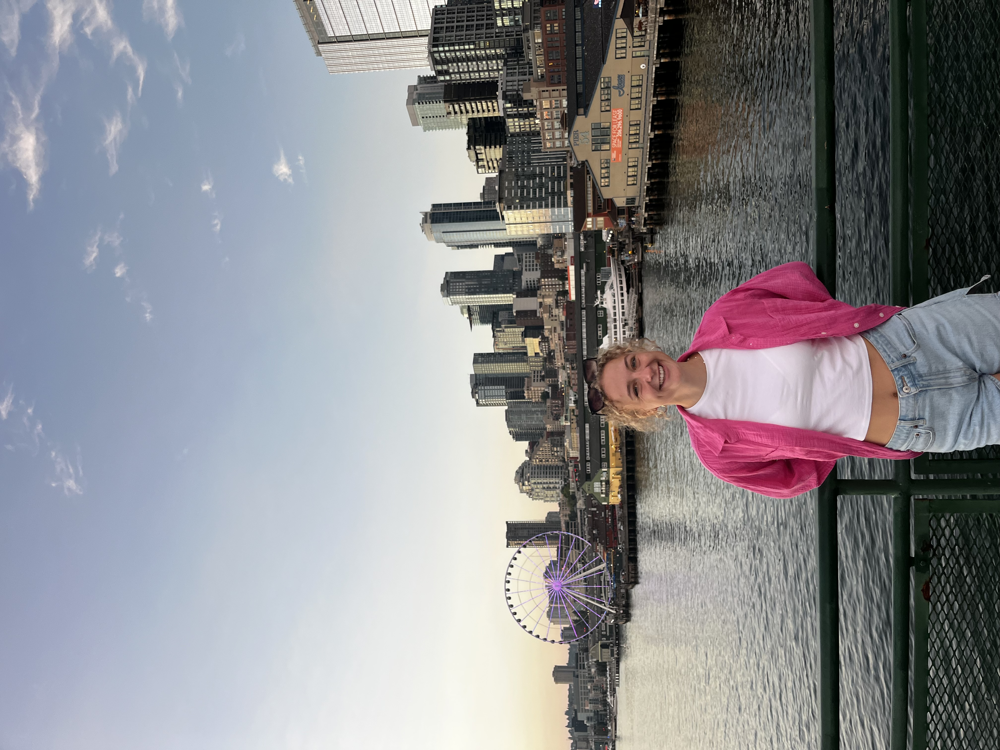
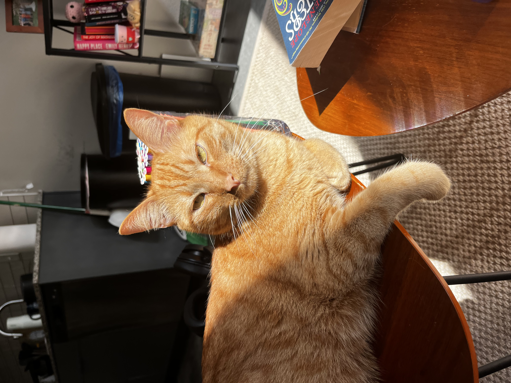

Hi, I'm Paige (she/her) and welcome to my website!

I created this website as a publicly accessible place to share my research and personal projects. I’m excited to have a space where I can bring together my academic work and a bit more about my life outside of it.
Academically
- I am a first-year PhD student in Biostatistics at the University of Washington.
- I’m currently working with Dr. Jon Wakefield and the Space Time Analysis Bayes (STAB) lab to analyze spatial field correlation in childhood mortality indicators. We use complex survey data with the goal of making those patterns more accessible and understandable at a subnational level.
- Before starting my PhD, I was a research fellow at the National Institute of Environmental Health Sciences. My research used latent class longitudinal modeling to look at associations between puberty and cancer.
- I received my Bachelor of Arts in Applied Mathematics and Statistics from Macalester College (Twin Cities, MN) in 2024. My minors were Anthropology and Community & Global Health.
- My CV has more information if you’re curious.
Outside of Math
- I’m from Pittsburgh, PA, but my family moved to Seattle when I was 12, so now I’m only a ferry ride away from my parents instead of a plane ride.
- I love reading, running, and resting: my big 3!
- My current read is Will of the Many by James Islington
- I started running about three years ago after playing soccer for most of my life. I ran my first half marathon with my dad this past fall in Seattle.
- Resting is exactly what it sounds like. I love laying in the sun or in bed with my orange cat, Goose.
- I also love to do yoga, try new food + recipes, and drink good coffee.

Links and Contact
If you're interested in my research or have any questions, feel free to contact me.
I also try to be active on
LinkedIn
and
Goodreads,
so check those out!